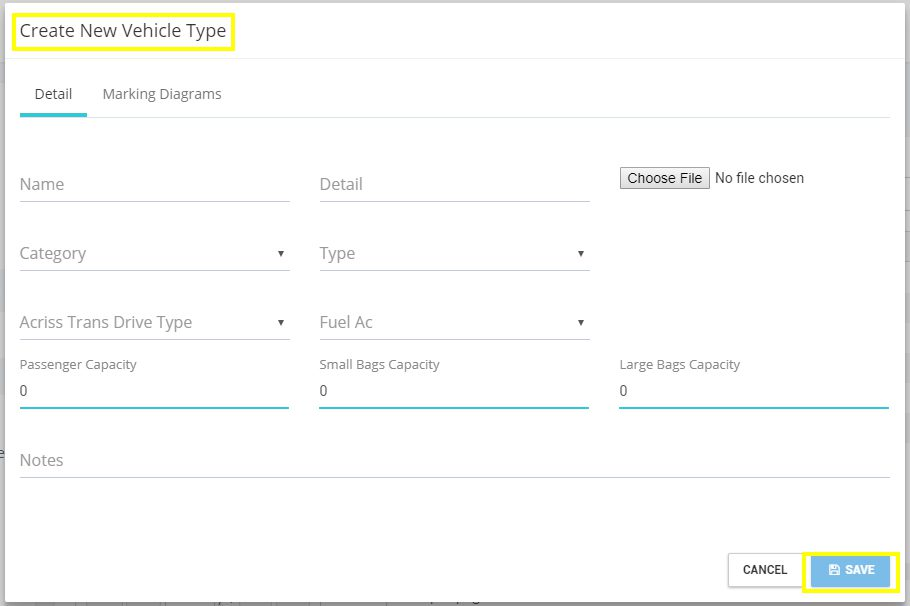
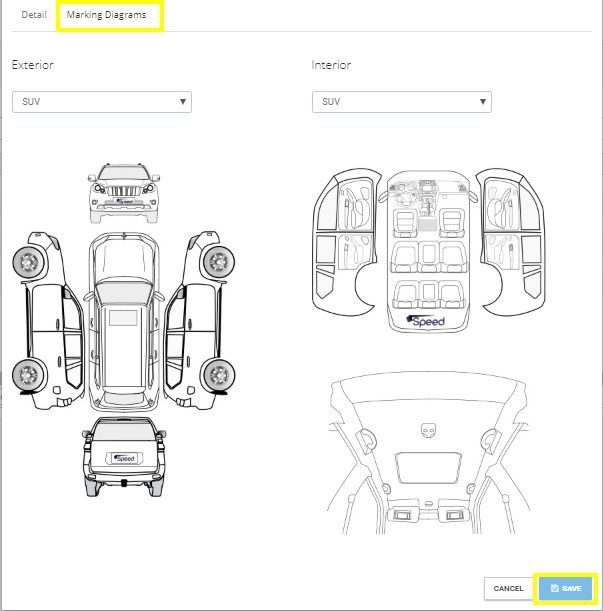

Defining Vehicle Types:
1. To define a vehicle type you have to go the fleet module from the left navigation panel.
2. Select Vehicle types.
3. Click on the blue button on the right named as “Create New Vehicle Type”
4. A pop up will appear now you have to enter the details of the vehicle type.
5. Suppose its a Sedan Car. So the name will be Sedan.
6. From Category you have to select the Category of the vehicle.
7. Then you have to select the vehicle type accordinlgy from the drop down menu.
8. Then from Acriss Trans Drive type you have specify the Transmission of the vehicle.
9. Then you have to select that this cars runs on which technology.
10. In the same pop up you will find the option of marking diagrams click on it.
11. You will find all type of shapes of cars and you have to select accordingly so that whenever inspection appears that same diagram will be shown. for exterior and interior.

